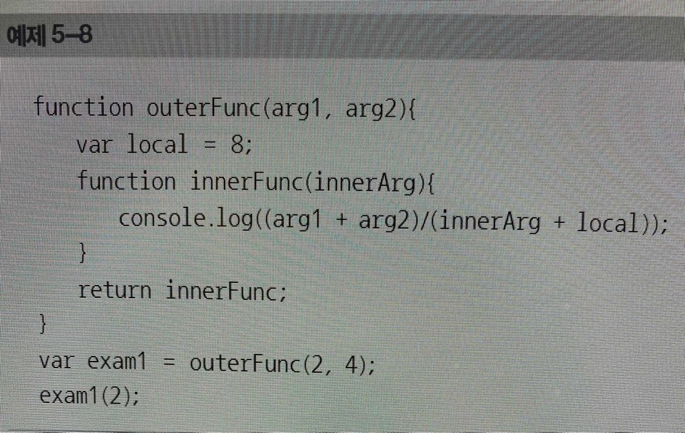
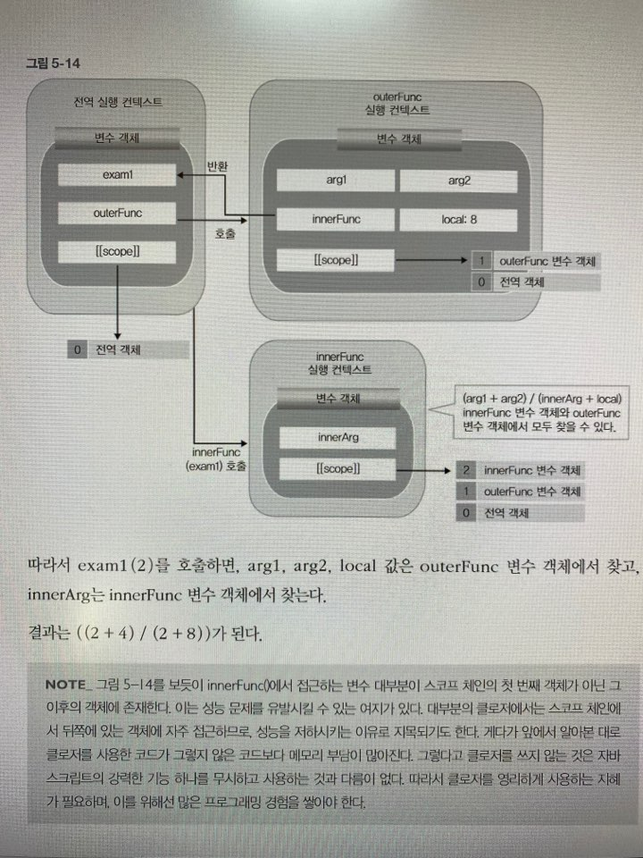

클로저예제2

앞 예제에서는 outerFunc() 함수를 호출하고 반환되는 함수 객체인 innerFunc()가 exam1으로 참조된다. 이것은 exam1(n)의 형태로 실행 될 수 있다. 여기서 outerFunc()가 실행되면서 생성되는 변수 객체가 스코프 체인에 들어가게되고, 이 스코프 체인은 innerFunc의 스코프 체인으로 참조된다. 즉, outerFUnc() 함수가 종료되었지만, 여전히 내부함수(innerFunc())의 [[scope]]으로 참조되므로 가비지 컬렉션의 대상이 되지 않고, 여전히 접근 가능하게 살아있다. 따라서 이후에 exam1(n)을 호출하여도, innerFunc()에서 참조하고자 하는 변수 local에 접근할 수 있다. 클로저는 이렇게 만들어진다. 이 outerFunc 변수 객체의 프로퍼티값은 여전히 (심지어 실행 컨텍스트가 끝났음에도) 읽기 및 쓰기까지 가능하다.
